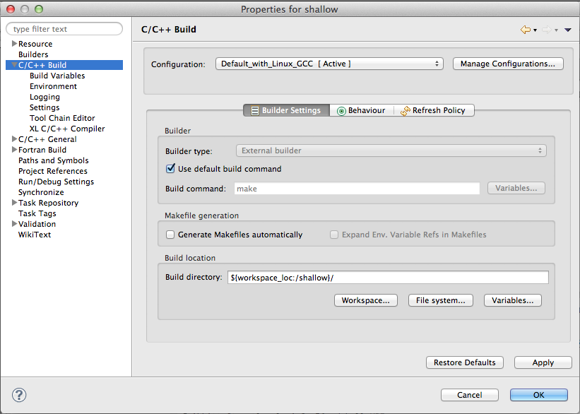
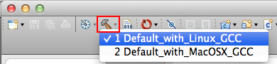
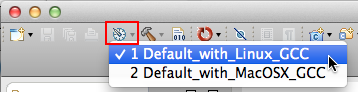
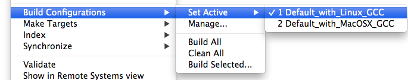
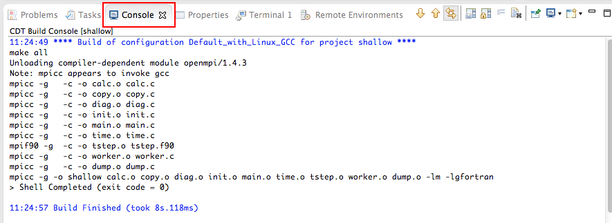
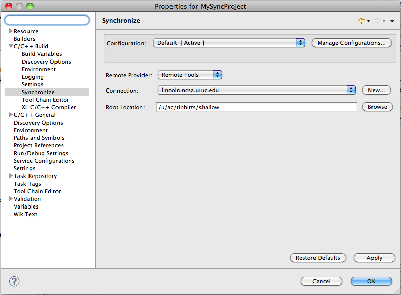
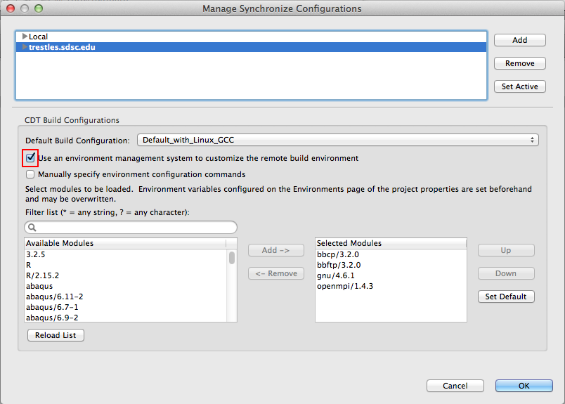
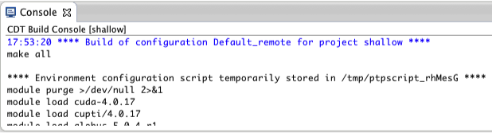

This section discusses
A build configuration provides the necessary information to build the project. Note that only C, C++, or Fortran synchronized projects will have build configurations.
A project's build configurations are initially based on the selected project type and selected remote and local tool chains, but really there is no restriction on which host a build configuration can be used. It is common to use the same build configuration for both remote and local hosts. The distinction of "remote" vs "local" only applies to sync configurations.
The build configuration information is specified in the project properties.
Open the Project Properties by right-clicking on the project name in the Project Explorer view and selecting Properties from the bottom of the context menu list.
The project properties dialog for the project appears.
Select C/C++ Build to view the Build Properties for the project.

The build Configuration can be selected at the top of this page. The following pages can be selected on the left side of the dialog:
C/C++ Build - the main properties page for build. Allows you to configure the build command. The default build command is "make" but this can be changed to anything.
The other pages listed under C/C++ Build include:
Multiple build configurations may be available for a project. Build configurations can be specified for different architectures on different target platforms.
The active build configuration will be used when the build button
 is selected.
is selected.
You can build and switch simultaneously using the arrow next to the build icon.

Or you can change the active configuration only by using the "sundial" icon next to the build icon.
You can also use the Build Configurations project context menu to change the active configuration. To do so, right click on the project, select Build Configurations > Set Active > and select the desired build configuration.

Build configurations and synchronize configurations are independent.
When the build button
 is selected, the active build configuration will be built on the remote system specified by the
active synchronize configuration.
is selected, the active build configuration will be built on the remote system specified by the
active synchronize configuration.
The result can be viewed in the Console view.

It is possible to change which build configuration is active, but make sure this makes sense on the remote system specified in the synchronize configuration.
A build configuration can be associated with a synchronize configuration, so that it is automatically selected when the synchronize configuration is changed.
With synchronize configurations (sync configurations, or sync configs for short), the build configuration can be set independently for each location where the project can be built.
Sync Configurations can be located from both
To access Sync configurations from the project context menu, use the right mouse on the project in Project Explorer, and select Synchronize > Manage ...

This brings up the Manage Synchronize Configurations dialog.

The same information can be accessed on the Synchronize page of Project Properties.
The top area lists sync configs which indicate different locations the project can be built. Select a sync config and the default build configuration is listed beneath it under CDT Build Configuration

See also Working with a Synchronized Project on the Synchronized Projects page for more discussion.
If the remote system has an environment system (such as Modules) installed, a custom set of modules can be configured for building C/C++ projects.
In the Manage Synchronize Configurations dialog, select the configuration you wish to change at the top, then check Use an environment management system to customize the remote build environment.

The remote system is queried for the availability of modules and the dialog is populated with available modules and currently selected modules. Select a module from the Available Modules list and click the Add -> button to add it to the Selected Modules list.
Use the <- Remove button to remove modules from the Selected Modules list.
Use the Filter list field to quickly find modules with a given name.
Use the Up and Down buttons to change the order of the Selected Modules.
Click Set Default to load only those modules that are present in a new login shell.
To build the project, Eclipse will
Module commands are displayed in the Console view during build.
Beware of modules that must be loaded in a particular order, or that contain
common paths like /bin or /usr/bin.

For more details see also Configuring Environment Modules.
For more details on Synchronized projects in general see see Synchronized projects.